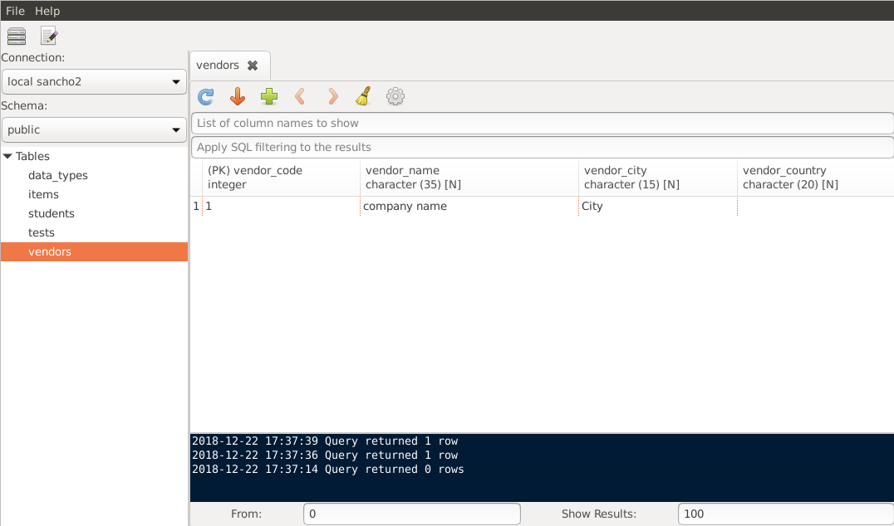

SanchoSQL is a desktop client application for PostgreSQL database. It allows viewing and manipulating database objects.

You can view tables in your databases using simple UI
Update, insert and delete table rows quickly without using SQL
SQL editor with syntax highlighting and tab-based user interface with the ability to work with many tables and queries at the same time
More features: Features